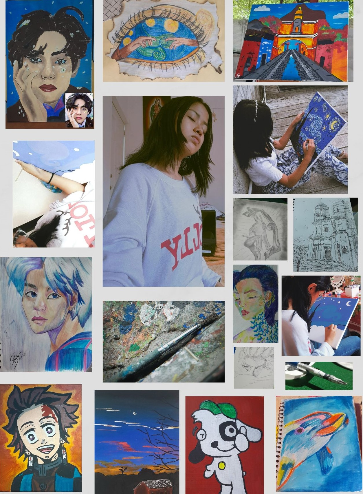

Pintura
Empecé a dibujar a los 12 años, por mucho tiempo dibujaba solo en blanco y negro
ya que se me dificultaba el poder pintar mis dibujos, tiempo después decidí
arriesgar mis dibujos y ponerles color, en el año 2,022 pinte un mural en una escuela,
fue una experiencia única ya que era la primera vez que lo hacía,
una de mis formas favoritas de dibujar hoy en día es con lapicero, ya que siento que le
da un toque diferente al dibujo cuando de edificaciones se trata, hace poco,
en este año, inincié con la pintura acrílica, no se me ha dificultado y me ha encantado
los resultados de las pinturas que he realizado. Me parece increíble como podemos mostrar
nuestra perspectiva del mundo a través de nuestras pinturas.
El arte nos brinda herramientas para lidiar con los desafíos de la vida,
al permitirnos canalizar nuestras emociones y pensamientos en formas creativas.
Además, nos ofrece un escape, un espacio para soñar y una fuente de motivación y belleza
que enriquece nuestra existencia diaria.
Cada pintura nace de un sueño nacido en el de corazón de las personas.
No solo es pintar un lienzo o una hoja en blanca, es pintar una parte de uno mismo.
